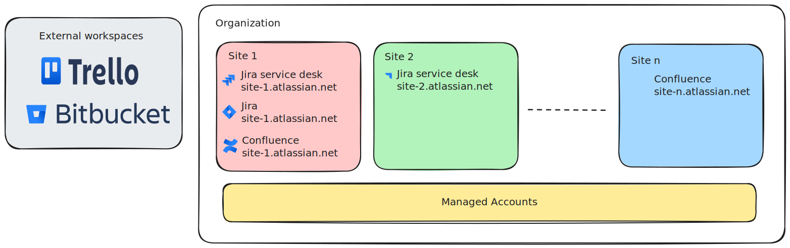

2.1. ¿Qué es una organización?#
Organization
Introducción a las organizaciones#
Una Organization en Atlassian es una entidad que centraliza la administración y gobernanza de múltiples apps, sitios y usuarios dentro del ecosistema de Atlassian Cloud (como Jira, Confluence, Bitbucket, etc.). Es básicamente el “contenedor maestro” donde se gestionan aspectos administrativos y de seguridad a nivel global.

Funcionalidades clave#
Gestión de usuarios y dominios verificados.
Acceso a políticas de seguridad (con Atlassian Guard).
Unificación de facturación y suscripciones.
Auditoría y visibilidad a nivel global.
Dentro de cada organización podemos tener una gran cantidad de sitios y dentro de cada sitio podemos tener varias apps (Antiguamente llamadas products)
Sitios#
Los sitios dentro de una Organization permiten tener distintas apps (como Jira, Confluence, Jira Service Management) con una división fuerte de permisos, acceso e información.
Dentro de una misma Organization podemos tener múltiples sitios. Esto puede ser ventajoso o innecesario según la estructura y necesidades de la empresa.
Más de un sitio#
URLs distintas para su acceso.
Ej:
dev.empresa.atlassian.netysoporte.empresa.atlassian.net
Distintas apps contratadas en cada sitio.
Ej: Sitio 1 con Jira + Confluence, Sitio 2 con Jira Service Management.
Permisos, workflows y configuraciones completamente separados.
Ideal para equipos o unidades de negocio independientes.
Ventajas de tener múltiples sitios#
Ventaja |
Detalles |
|---|---|
Separación lógica |
Equipos aislados por cliente, región, o tipo de trabajo. |
Administración centralizada |
Desde la Organization, se gestionan todos los sitios. |
Control granular de acceso |
Cada sitio tiene sus propios administradores y permisos. |
Evita contaminación de datos |
Los proyectos de un sitio no interfieren con los de otro. |
Escalabilidad estructurada |
Útil en grandes empresas o grupos corporativos. |
Desventajas de tener múltiples sitios#
Desventaja |
Detalles |
|---|---|
Aislamiento entre sitios |
No se comparten usuarios, proyectos ni búsquedas. |
Duplicación de configuración |
Workflows, apps y esquemas deben replicarse manualmente. |
Licenciamiento por separado |
Cada sitio tiene su propio billing y apps. |
Mantenimiento complejo |
A más sitios, más administración. |
No hay navegación cruzada |
No podés ver proyectos de varios sitios desde un mismo lugar. |
Apps#
Dentro de nuestros sitios podemos tener la combinación de Apps que se ajuste a nuestras necesidades. Anteriormente Atlassian llamaba “productos” a las Apps de Atlassian y mantenía el término App para los desarrolos de terceros o add ons.
Cambios en la terminología Atlassian
Desde abril de 2025 la terminología cambia de “productos” a “apps” puedes ver la razón de este cambio en la documentación oficial de Jira.
Tipo de aplicaciones#
Actualmente se define que todo lo instalado dentro de un sitio pasa a llamarse Apps y tiene la siguiente clasificación
Tipo de app |
Descripción |
|---|---|
Aplicaciones de Atlassian |
Anteriormente conocidas como productos de Atlassian, incluyen herramientas como Jira, Confluence y Loom. Estas apps vienen acompañadas de aplicaciones de plataforma integradas, diseñadas para mejorar la visibilidad y la alineación en toda la organización. Actualmente incluyen: Home, Goals, Teams, Analytics y Rovo (Chat, Search y Studio). |
Apps del Marketplace |
Aplicaciones creadas sobre las plataformas de desarrollo de Atlassian y vendidas a través del Atlassian Marketplace. Permiten extender funcionalidades de los productos base. |
Apps de terceros |
Aplicaciones externas que no están construidas sobre las plataformas de Atlassian, pero pueden integrarse para mejorar los flujos de trabajo. Ejemplos comunes: Slack, Figma, Workday. |
Apps personalizadas |
Aplicaciones desarrolladas internamente por tu organización, diseñadas para cubrir necesidades específicas y utilizadas exclusivamente dentro de la misma. |